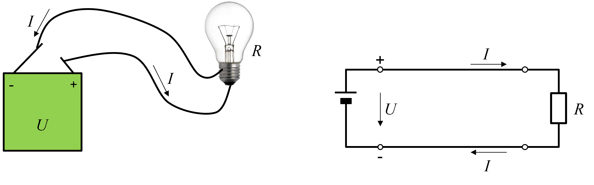
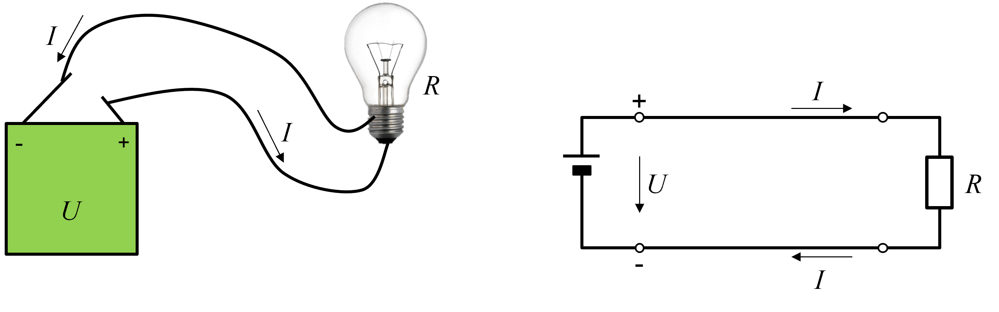

Egyszerű villamos áramkörök és rajzolásuk
Minden villamos áramkör három fő részből tevődik össze: villamos energiaforrásból, fogyasztóból és az őket összekötő vezetékekből.
Minden villamos áramkör három fő részből tevődik össze: villamos energiaforrásból, fogyasztóból és az őket összekötő vezetékekből.
